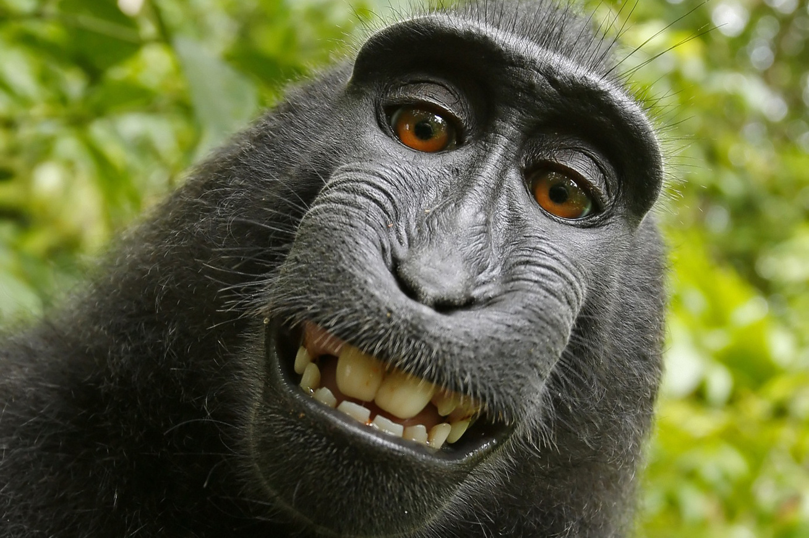
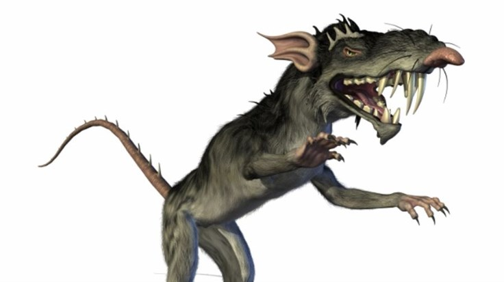

Igazából egy darab szeplő sincsen rajtam, de ez az egyetlen kép rólam, amitől !talán! nem lesz rosszul senki, úgyhogy ez van.
De most gondolj már bele, ha ez a legjobb kép rólam, akkor milyen lehet a legrosszabb?
!VIGYÁZAT!
!EGÉSZSÉGRE KÁROS KÉPKOCKÁK KÖVETKEZNEK!
Úgy döntöttem, hogy ezt senki nem élné túl, úgyhogy inkább itt van pár képp szebb koromból:

